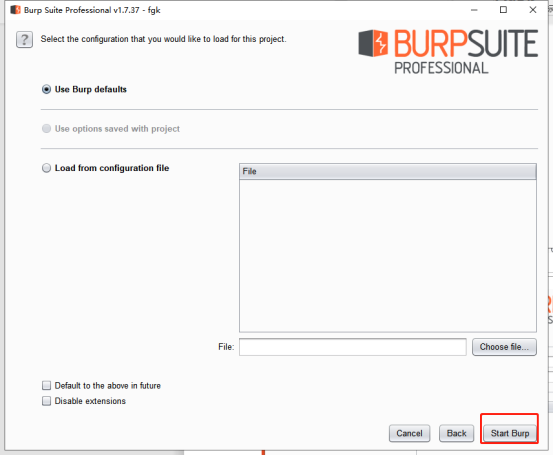

Burp Suite_专业版
原文链接：Burp_suite安装及使用教程(专业版) - 停泊2019 - 博客园 (cnblogs.com)
因为担心博主删除博文，在此copy一份原博文。（注：本文在以上文章的内容基础上有稍作添加）
Burp_suite安装及使用教程(专业版)
1、工具下载地址：
https://down.52pojie.cn/Tools/Network_Analyzer/Burp_Suite_Pro_v1.7.37_Loader_Keygen.zip
工具运行需要Java环境，请自行安装，此处不赘述。（注：检测java环境是否安装完成：cmd中输入java -version 、 java 、 javac 几个命令观察返回信息）
解压完成后右击burp-loader-keygen.jar，以Java(TM) Platform SE binary的方式打开keygen
2、修改License Text为任意值
3、点击run启动burpsuite
4、如果上述方式没有成功启动burpsuite，打开cmd，进入burp-loader-keygen.jar所在目录，执行命令：java -Xbootclasspath/p:burp-loader-keygen.jar -jar burpsuite_pro_v1.7.37.jar
5、打开burpsuite成功
6、将Keygen中License复制粘贴到burpsuite中
点击Next
7、然后点击Manual activation
8、点击Copy request
9、点击Copy request，复制完成之后，将字符串粘贴到keygen的Activation Request框里，然后Activation Response框里就有了结果，如下
10、复制完后，将字符串粘贴到BurpSuite剩下的那个框里，如图，再点击Next显示激活成功
11、再点击Next显示激活成功
注：若出现以下情况，点击Delete即可
然后点击Next
再点击Start Burp

12、burpsuite主界面
13、激活之后，不能通过双击BurpSuite主程序来启动，否则启动之后还是需要输入key，两个文件必须放在一个目录下，启动方式有两种：
通过 keygen 上的 run 按钮来启动（注：本人无法通过此方法打开BurpSuite专业版）
在文件目录下执行java -Xbootclasspath/p:burp-loader-keygen.jar -jar burpsuite_pro_v1.7.31.jar来启动.为了方便，可以将命令保存为一个bat
注：bat方法：
1、当前目录下新建txt文本文档：
2、将以下指令写入新建文本文档中，点击另存为另存至当前目录，相关配置数据按下图修改
1 | java -Xbootclasspath/p:burp-loader-keygen.jar -jar burpsuite_pro_v1.7.37.jar |
3、创建快捷方式拖动到桌面即可在桌面打开BurpSuite专业版
Burpsuite神奇常用功能使用方法总结
Burpsuite介绍：
一款可以进行再WEB应用程序的集成攻击测试平台。(抓https要在浏览器中导入证书)
1、学习Proxy
首先看标红，intercept is on 为拦截状态 其对应的intercept is off 为非拦截状态,设置完代理后打开拦截状态，浏览器发起的请求会被burpsuite所拦截
forward: 进行请求后被拦截，点击forward可以继续此次请求，如果你点击drop则丢弃此请求数据。继续请求后能够看到返回结果
可以在消息分析选项卡查看这次请求的所有内容
1）Raw 这个视图主要显示web请求的raw格式，包含请求地址， http协议版本， 主机头， 浏览器信息，accept可接受的内容类型，字符集，编码方式，cookies等, 可以手动修改这些内容，然后在点击forward进行渗透测试
2） params 这个视图主要是显示客户端请求的参数信息，get或者post的参数，cookies参数，也可以修改
3）headers是头部信息和Raw其实差不多，展示更直观
4）Hex 这个视图显示Raw的二进制内容
注意： 默认情况下，BurpProxy只拦截请求的消息，普通的文件如css,js,图片是不会拦截的，当然，想拦截什么都可以设置,我们现在知道了怎么设置代理，怎么安装，怎么进行请求拦截，怎么修改请求发起的内容向服务端进行渗透，接下来我们学习一下怎么控制这些拦截
上图为http history 所有拦截的历史均会被记录起来
Burp Proxy的拦截功能主要由Intercept选项卡中的Forward、Drop、Interception is on/off、Action构成，它们的功能分别是： Forward的功能是当你查看过消息或者重新编辑过消息之后，点击此按钮，将发送消息至服务器端。 Drop的功能是你想丢失当前拦截的消息，不再forward到服务器端。Interception is on表示拦截功能打开，拦截所有通过Burp Proxy的请求数据；Interception is off表示拦截功能关闭，不再拦截通过Burp Proxy的所有请求数据。 Action的功能是除了将当前请求的消息传递到Spider、Scanner、Repeater、Intruder、Sequencer、Decoder、Comparer组件外，还可以做一些请求消息的修改，如改变GET或者POST请求方式、改变请求body的编码，同时也可以改变请求消息的拦截设置，如不再拦截此主机的消息、不再拦截此IP地址的消息、不再拦截此种文件类型的消息、不再拦截此目录的消息，也可以指定针对此消息拦截它的服务器端返回消息。
2、burpsuite使用（抓包、截包、改包）
这里推荐火狐浏览器来配合burp使用。
1）设置浏览器
工具-选项-网络设置-设置，将连接设置改为手动代理配置
输入127.0.0.1:8080，点击回车，进入burp证书下载页面
点击右上角，下载证书
在选项里搜索证书，点击【查看证书】
点击【导入】，导入刚刚下载的burp证书，这样就可以使用burp抓取https请求了
这时候计算机上的火狐浏览器也设置为了代理模式。代理设置成功之后，访问网页是访问不了的，因为我们没有将请求转发，接下来就需要配置burp来转发浏览器的请求。
2）配置burp监听端口
然后打开burp
在监听的端口设置与代理的端口相同
3）抓包
将burp设置为Intercept is on，在火狐浏览器里输入baike.baidu.com
将Intercept is on设置为Intercept is off
4）截包
这时候就需要打开拦截功能了
之前在抓包的时候可以看到，百度搜索一次要发送很多个请求，这个时候停留在第一个请求上面，这时候，如果不听地点击forward的话，就会一直发送接下来的请求。如果不停点击drop，就会把这些请求的包一个个丢掉。
5）改包
比如水果网http://www.guo68.com/搜索水果：pingguo（搜索中文的时候抓的包是乱码，不利观察）
一直点击forward，并且查看params选项，直到参数的内容中出现pingguo
这时候把pingguo改成putao，继续点击forward或者关闭拦截功能。
便会搜索putao了。